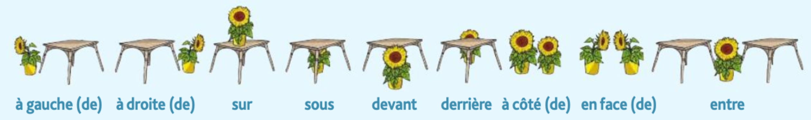

| 情況 | 用 | 例 |
|---|---|---|
| 陽性單數（子音開頭） | ce | ce chien |
| 陽性單數（母音/h 開頭） | cet | cet hôtel, cet animal |
| 陰性單數 | cette | cette veste, cette robe |
| 複數（不分性別） | ces | ces livres |
| 男性 | 女性 | 規則 |
|---|---|---|
| français | française | + e |
| chinois | chinoise | + e |
| américain | américaine | + e |
| allemand | allemande | + e |
| espagnol | espagnole | + e |
| hollandais | hollandaise | + e |
| japonais | japonaise | + e |
| coréen | coréenne | -éen → + ne（子音雙寫，保持 e 音） |
| italien | italienne | -ien → + ne（子音雙寫） |
| canadien | canadienne | -ien → + ne |
| colombien | colombienne | -ien → + ne |
| belge | belge | 不變（已是 e 結尾） |
| suisse | suisse | 不變（已是 e 結尾） |
| russe | russe | 不變（已是 e 結尾） |
| grec | grecque | 例外：+ que |
| turc | turque | 例外：+ que |
| aimer | détester | |
|---|---|---|
| je | aime | déteste |
| tu | aimes | détestes |
| il/elle/on | aime | déteste |
| nous | aimons | détestons |
| vous | aimez | détestez |
| ils/elles | aiment | détestent |
| je | nage |
| tu | nages |
| il/elle/on | nage |
| nous | nageons ⚠️ |
| vous | nagez |
| ils/elles | nagent |
| 主詞 | 陽性單數 | 陰性單數 | 複數 |
|---|---|---|---|
| je | mon | ma | mes |
| tu | ton | ta | tes |
| il/elle | son | sa | ses |
| nous | notre | notre | nos |
| vous | votre | votre | vos |
| ils/elles | leur | leur | leurs |
| 陽性字尾 | 例 | 陰性字尾 | 例 |
|---|---|---|---|
| -e | fleuriste | -e（不變） | fleuriste |
| -eur | coiffeur | -euse | coiffeuse |
| -teur | acteur | -trice | actrice |
| -ien | informaticien | -ienne | informaticienne |
| -er | infirmier | -ère | infirmière |
| -t / -r | étudiant, professeur | -te / -re | étudiante, professeure |
| 商店 | 陽性 | 陰性 |
|---|---|---|
| la boucherie | le boucher | la bouchère |
| la boulangerie | le boulanger | la boulangère |
| l'épicerie (f.) | l'épicier | l'épicière |
| la fromagerie | le fromager | la fromagère |
| la poissonnerie | le poissonnier | la poissonnière |
| 陽性 (m) | 陰性 (f) | 規則 |
|---|---|---|
| bleu | bleue | 加 e |
| vert | verte | 加 e |
| gris | grise | 加 e |
| noir | noire | 加 e |
| violet | violette | -et → -ette（子音重複） |
| blanc | blanche | 例外：-c → -che |
| rouge | rouge | 陰陽同形（以 e 結尾） |
| jaune | jaune | 陰陽同形（以 e 結尾） |
| rose | rose | 陰陽同形（以 e 結尾） |
| orange | orange | 不變（也是水果名，不加 s/e） |
| marron | marron | 不變（也是栗子，不加 s/e） |
| à + … | 結果 | 例子 |
|---|---|---|
| à + le | au | au marché |
| à + la | à la | à la boulangerie |
| à + l' | à l' | à l'épicerie |
| à + les | aux | aux caisses |
| 地方 | 人（chez） |
|---|---|
| à la boulangerie | chez le boulanger |
| à la boucherie | chez le boucher |
| à la fromagerie | chez la fromagère |
| à la poissonnerie | chez le poissonnier |
| à l'épicerie | chez l'épicier |
| au marché | — |
| 人稱 | 變位 |
|---|---|
| je | j'achète |
| tu | tu achètes |
| il / elle / on | il achète |
| nous | nous achetons |
| vous | vous achetez |
| ils / elles | ils achètent |
| 人稱 | 形式 1 | 形式 2 |
|---|---|---|
| je | je paie | je paye |
| tu | tu paies | tu payes |
| il / elle / on | il paie | il paye |
| nous | nous payons | |
| vous | vous payez | |
| ils / elles | ils paient | ils payent |
| 商店 (le commerce) | 男店員 (m) | 女店員 (f) | 賣什麼 |
|---|---|---|---|
| la boulangerie | le boulanger | la boulangère | 麵包・甜點 |
| la boucherie | le boucher | la bouchère | 肉類 |
| l'épicerie | l'épicier | l'épicière | 雜貨（蔬果、罐頭…） |
| la poissonnerie | le poissonnier | la poissonnière | 魚・海鮮 |
| la fromagerie | le fromager | la fromagère | 起司 |
| la pâtisserie | le pâtissier | la pâtissière | 蛋糕・甜點 |
| le supermarché | 超市（無特定店員稱謂） | 一站式購物 | |
| 性數 | 冠詞 | 例句 |
|---|---|---|
| 陽性單數 | du (= de + le) | Je mange du poisson. |
| 陰性單數 | de la | Je mange de la viande. |
| 母音開頭 | de l' | Je bois de l'eau. |
| 複數 | des | Je mange des pâtes. |
| 法語 | 熟度 |
|---|---|
| bleu | 極生（幾乎生的） |
| saignant | 三分熟 |
| à point | 五分熟（推薦） |
| bien cuit | 全熟 |
| 人稱 | être 是（身分/狀態） |
avoir 有 |
aller 去 |
faire 做 |
|---|---|---|---|---|
| je / j' | suis | ai | vais | fais |
| tu | es | as | vas | fais |
| il / elle | est | a | va | fait |
| nous | sommes | avons | allons | faisons |
| vous | êtes | avez | allez | faites |
| ils / elles | sont | ont | vont | font |
| 時間 | 說法 | 例 |
|---|---|---|
| :00 | heure(s) | Il est deux heures. |
| :15 | et quart | Il est deux heures et quart. |
| :30 | et demie | Il est deux heures et demie. |
| :45 | moins le quart | Il est trois heures moins le quart. |
| :10 etc. | 直接加分鐘 | Il est deux heures dix. |
| 數字 | 說法 | 注意 |
|---|---|---|
| :15 | quinze | 13h15（不用 et quart） |
| :30 | trente | 20h30（不用 et demie） |
| :45 | quarante-cinq | 22h45 |
| 副詞 | 意思 | 例句 |
|---|---|---|
| toujours | 總是 always | Je vais toujours au musée. |
| souvent | 常常 often | Je vais souvent au musée. |
| déjà | 已經 already | Nous avons déjà vu ce film. |
| jamais | 從不 never | Je ne vais jamais au théâtre. |
| 結構 | 意思 | 例句 |
|---|---|---|
| ne ... jamais | 從不 | Je ne vais jamais au cinéma.（我從不去電影院） |
| ne ... rien | 什麼都不 | Elle ne boit rien.（她什麼都不喝） |
| ne ... personne | 沒有任何人 | Je ne connais personne ici.（我在這裡誰都不認識） |
| ne ... plus | 不再（已停止） | Il ne fait plus de sport.（他不再運動了） |
| à + 非機動 | en + 機動 |
|---|---|
| à pied (m.) 步行 | en bus (m.) 公車 |
| à vélo (m.) 腳踏車 | en métro (m.) 地鐵 |
| à trottinette (f.) 滑板車 | en train (m.) 火車 |
| à moto (f.) 摩托車 | en tramway (m.) 電車 |
| à scooter 摩托車 | en voiture (f.) 汽車 |
| 人稱 | impératif | 注意 |
|---|---|---|
| tu | Monte ! | -ER tu 形去掉 s（montES → montE） |
| nous | Montons ! | 同現在式 nous 形 |
| vous | Montez ! | 同現在式 vous 形 |
| 動詞 | tu | nous | vous |
|---|---|---|---|
| être | Sois | Soyons | Soyez |
| avoir | Aie | Ayons | Ayez |
| aller | Va | Allons | Allez |
| 距離 | 建議 | 交通工具 |
|---|---|---|
| 1 km | Marchez ! | à pied 步行 |
| 2 km | Utilisez la trottinette. | à trottinette 滑板車 |
| 2–10 km | Prenez votre vélo. | à vélo 腳踏車 |
| 長距離 | Faites du covoiturage. | le covoiturage 共乘 |
| 連接詞 | 功能 | 例句 |
|---|---|---|
| pour + 動詞原形 | 目的（為了） | Pour aller au Canada. |
| parce que / parce qu' | 原因（因為） | Parce que c'est pratique. |
| mais | 轉折（但是） | Mais ça coûte cher. |
| avec | 伴隨（和、帶著） | Avec mon mari. |
| sans + 名詞/動詞原形 | 缺乏（沒有、不） | Sans voiture. / Sans polluer. |
| 說法 | 意思 | 天數 |
|---|---|---|
| la semaine / en semaine | 工作日 | 週一～週五（5天） |
| le week-end | 週末 | 週六、週日（2天） |
| une semaine | 一整週 | 7天 |
| 組別 | 字尾 | 例子 | 特性 |
|---|---|---|---|
| 第一組 | -ER | parler, aimer, habiter, acheter | 最多，規則 |
| 第二組 | -IR | finir, partir, choisir | je finis / nous finissons |
| 第三組 | 其他（不規則） | avoir, être, faire, pouvoir, vendre, mettre, prendre, vouloir, aller | 不規則，需個別記 |
| 陽性（子音開頭） | 陽性（母音/啞音h開頭） | 陰性 | 陽性複數 | |
|---|---|---|---|---|
| 美麗的 | beau | bel | belle | beaux |
| 新的 | nouveau | nouvel | nouvelle | nouveaux |
| 主詞 | aller | + infinitif（範例） |
|---|---|---|
| je | vais | je vais manger |
| tu | vas | tu vas tricoter |
| il/elle | va | elle va être contente |
| nous | allons | nous allons créer |
| vous | allez | vous allez apprendre |
| ils/elles | vont | ils vont être heureux |
| 單數 | 複數 | |
|---|---|---|
| 陽性 | ce sac | ces objets |
| 陽性（母音/啞音h開頭） | cet étui / cet objet | ces étuis |
| 陰性 | cette coque | ces tablettes |
| 主詞 | se réveiller | s'habiller |
|---|---|---|
| je | me réveille | m'habille |
| tu | te réveilles | t'habilles |
| il/elle/on | se réveille | s'habille |
| nous | nous réveillons | nous habillons |
| vous | vous réveillez | vous habillez |
| ils/elles | se réveillent | s'habillent |
| 提議 Proposer | 接受 Accepter | 拒絕 Refuser |
|---|---|---|
| On va au théâtre ? | D'accord ! | Je ne peux pas, je suis désolé(e). |
| Tu veux aller au théâtre ? | Pourquoi pas ! | Je n'ai pas envie. |
| Ça te dit ? | Avec plaisir ! |
| jamais | rarement | parfois | souvent | toujours |
|---|---|---|---|---|
| 從不 | 很少 | 有時候 | 常常 | 總是 |
家事動詞幾乎全用 faire + 名詞，若有可替代的動詞（cuisiner, jardiner…）用 faire du/de la；不可替代的動作（vaisselle, ménage）則用 faire la/le。
| 表達 | 意思 | 可替代動詞 |
|---|---|---|
| faire du bricolage | 做 DIY、修繕 | bricoler |
| faire les courses | 買菜、購物（食品） | —（⚠️ 複數！） |
| faire la cuisine / faire à manger | 煮飯 | cuisiner |
| faire du jardinage | 園藝 | jardiner |
| faire une lessive | 洗衣服 | — |
| faire la vaisselle | 洗碗 | — |
| faire le ménage | 打掃家裡 | — |
| 表達 | 意思 | 備註 |
|---|---|---|
| faire du dessin / dessiner | 畫畫 | aller à un cours de dessin = 去上畫畫課 |
| se promener / se balader | 散步 | promener qqn = 帶某人/寵物去走走 |
| faire des sorties / sortir | 出去玩、與朋友外出 | Elle fait beaucoup de sorties avec ses amis |
| écouter de la musique / la radio | 聽音樂/廣播 | |
| faire du jogging / du sport | 跑步、運動 | |
| jouer à un jeu vidéo | 打電動 | jouer = 玩，jeu = 遊戲（同字根） |
| jouer à des jeux de société | 玩桌遊 | Monopoly、棋類… |
| lire | 看書 | |
| regarder la télé / un film | 看電視/電影 | télévision → la télé（口語縮寫） |
| surfer sur internet | 上網 | |
| voir des amis / sa famille | 見朋友/家人 |
用來表達「剛才做完的事」，不算正式時態，只是一個固定句型。要變位的是 venir，後面的動詞保持原形（infinitif）。
| 人稱 | venir 變位 | 例句 |
|---|---|---|
| je | viens | Je viens de faire la vaisselle. 我剛洗完碗。 |
| tu | viens | Tu viens de rentrer ? 你剛回來嗎？ |
| il/elle/on | vient | Elle vient de commencer. 她剛開始。 |
| nous | venons | Nous venons d'arriver. 我們剛到。 |
| vous | venez | Vous venez de finir ? 你們剛結束？ |
| ils/elles | viennent | Ils viennent d'acheter des places. 他們剛買票。 |
| 類別 | 表達 | 意思 |
|---|---|---|
| 體型 | grand / grande | 高（tall） |
| petit / petite | 矮 | |
| gros / grosse | 胖・魁梧（fat / big） | |
| mince | 瘦・苗條（同形陰陽） | |
| 臉部 | il a la barbe / il est barbu | 有鬍子 |
| il a la moustache | 有小鬍子（唇上方） | |
| il est chauve | 禿頭 | |
| 眼睛 （avoir） | les yeux bleus | 藍眼睛 |
| les yeux marrons | 棕眼睛（⚠️ 眼睛用 marron） | |
| les yeux noirs | 黑眼睛 | |
| les yeux verts | 綠眼睛 | |
| 頭髮 （avoir） | les cheveux blonds | 金髮 |
| les cheveux bruns | 棕髮（⚠️ 頭髮用 brun，不用 marron） | |
| les cheveux châtains | 栗色髮 | |
| les cheveux roux | 紅髮（⚠️ 頭髮用 roux，不用 rouge） | |
| les cheveux gris / blancs | 灰髮 / 白髮 | |
| les cheveux courts / longs | 短髮 / 長髮 | |
| les cheveux frisés / raides | 捲髮 / 直髮 |
| 陽性 | 陰性 | 意思 |
|---|---|---|
| gentil | gentille | 善良（↔ méchant/méchante） |
| sympathique / sympa | sympathique / sympa | 友善、好相處（同形） |
| sérieux | sérieuse | 認真 |
| intelligent | intelligente | 聰明 |
| courageux | courageuse | 勇敢 |
| généreux | généreuse | 慷慨（他為朋友做很多事） |
| sociable | sociable | 社交、外向（同形） |
| dynamique | dynamique | 活力充沛（同形） |
| bavard | bavarde | 話多 |
| stressé | stressée | 緊張、有壓力 |
| drôle | drôle | 有趣、搞笑（同形） |
| calme | calme | 冷靜（同形） |
一般代詞（je/tu/il…）用在動詞前後；重讀代詞（pronoms toniques）用於強調、比較、以及 chez + 人 的句型。
| 人稱 | 一般代詞 | 重讀代詞 |
|---|---|---|
| je | je / me | moi |
| tu | tu / te | toi |
| il | il / le | lui |
| elle | elle / la | elle |
| nous | nous | nous |
| vous | vous | vous |
| ils | ils / les | eux |
| elles | elles / les | elles |
| 動詞 | 意思 | 例句 |
|---|---|---|
| déménager | 搬出（move out） | On a déménagé il y a 10 jours. |
| emménager | 搬入（move in） | On emménage dans le nouvel appartement. |
| 詞彙 | 意思 | 備註 |
|---|---|---|
| 🏠 Intérieur（室內） | ||
| la chambre | 臥室 | ⚠️ chambre = 臥室；pièce = 泛指任何房間 |
| la salle de bain | 浴室 | bain = 浴缸；se baigner = 泡澡／游泳 |
| la cuisine | 廚房 | |
| le salon | 客廳 | |
| la salle à manger | 餐廳 | |
| le séjour | 起居室 | salon + salle à manger 合一 = le séjour |
| le grenier | 閣樓 | 法國人堆雜物的地方 → vide-grenier |
| 🌿 Extérieur（室外） | ||
| la terrasse | 露台 | 法國人愛在 terrasse 喝咖啡、吃飯 |
| le jardin | 花園 | |
| 🔌 L'équipement（家電） | ||
| le frigo | 冰箱 | réfrigérateur 的俗稱（品牌名轉通用詞，同 renard 取代 goupil） |
| le four à micro-ondes | 微波爐 | 也說 le micro-ondes；four 單獨用 = 烤箱 |
| le lave-linge | 洗衣機 | linge = 待洗的衣物（dirty laundry） |
| le lave-vaisselle | 洗碗機 | 法國家庭幾乎都有 |
| la cuisinière | 瓦斯爐／電磁爐 | |
表示「已完成、已結束」的過去動作。結構 = avoir（現在式）+ participe passé（過去分詞）。-ER 動詞的過去分詞規則：去掉 -er，加 -é。
| avoir 變位 | + participe passé | 例（trouver → trouvé） |
|---|---|---|
| j'ai | -ER → 去掉 -er 加 -é | j'ai trouvé |
| tu as | tu as trouvé | |
| il/elle/on a | il a trouvé | |
| nous avons | nous avons trouvé | |
| vous avez | vous avez trouvé | |
| ils/elles ont | ils ont trouvé |
| 動詞 | 過去分詞 | 例句 |
|---|---|---|
| trouver | trouvé | Vous avez trouvé des meubles ?（你們找到家具了嗎？） |
| déménager | déménagé | On a déménagé il y a 10 jours.（我們10天前搬了） |
| décorer | décoré | Ils ont décoré leur appartement. |
| acheter | acheté | J'ai acheté une armoire. |
| chercher | cherché | Nous avons cherché des meubles. |
| oublier | oublié | Tu as oublié de fermer la porte. |

| 介系詞 | 意思 | 例句 |
|---|---|---|
| à gauche (de) | 在…左邊 | à gauche du canapé |
| à droite (de) | 在…右邊 | à droite de la fenêtre |
| sur | 在…上面 | sur la table |
| sous | 在…下面 | sous la chaise |
| devant | 在…前面 | devant le canapé |
| derrière | 在…後面 | Je place la table derrière le canapé. |
| à côté (de) | 在…旁邊 | à côté des fenêtres |
| en face (de) | 在…對面 | en face du canapé |
| entre | 在…之間 | entre les deux chaises |
| 詞彙 | 意思 | 備註 |
|---|---|---|
| l'appartement (m.) | 公寓 | |
| l'ascenseur (m.) | 電梯 | parties communes（公共區域） |
| le couloir | 走廊 | parties communes |
| l'escalier (m.) | 樓梯 | parties communes |
| le hall | 大廳入口 | parties communes |
| le balcon | 陽台 | |
| le local à poubelles | 垃圾房 | |
| le local à vélos | 腳踏車停放室 | |
| la pelouse | 草坪 | Défense de marcher sur la pelouse. |
| la résidence | 住宅社區 | |
| le/la voisin(e) | 鄰居 | Respectez vos voisins ! |
公寓規約（règlement intérieur）常見這幾種句型，都接 infinitif（動詞原形）。
| 類型 | 句型 | 例句 |
|---|---|---|
| 禁止 | Défense de + inf. | Défense de fumer.（禁止抽菸） |
| Interdiction de + inf. | Interdiction de faire des barbecues. | |
| Il est interdit de + inf. | Il est interdit de vapoter dans l'ascenseur. | |
| 義務／通知 | Ne pas + inf. | Ne pas laisser votre vélo dans les couloirs. |
| 請求（禮貌） | Merci de + inf. | Merci de fermer la porte d'entrée. |
| Prière de + inf. | Prière de trier vos déchets.（請做好垃圾分類） |
COD（Complément d'Objet Direct）取代句子中的直接受詞（人或物），放在動詞前面。
| 單數 | 複數 | |
|---|---|---|
| 陽性 | le | les |
| 陰性 | la | |
| 母音／啞音 h 前 | l' |
| 詞彙 | 意思 | 例句 |
|---|---|---|
| les meubles (m.pl.) | 家具（總稱） | Vous avez trouvé des meubles ? |
| un lit | 床 | On n'a pas trouvé de lit. |
| un canapé | 沙發 | Je place la table derrière le canapé. |
| un fauteuil | 扶手椅 | On a trouvé deux fauteuils pas chers. |
| une armoire | 衣櫃 | On cherche aussi une armoire. |
| un bureau | 書桌 | |
| une table basse | 茶几 | |
| des objets de décoration | 裝飾物品 |
| 詞彙 | 意思 | 備註 |
|---|---|---|
| 🫁 Le corps（身體） | ||
| le bras | 手臂 | |
| le dos | 背部 | j'ai mal au dos = 背痛 |
| le genou | 膝蓋 | 複數：les genoux |
| la gorge | 喉嚨 | j'ai mal à la gorge = 喉嚨痛 |
| la jambe | 腿 | |
| la main | 手 | |
| le pied | 腳 | |
| la tête | 頭 | |
| le ventre | 肚子 | |
| 😊 Le visage（臉） | ||
| la bouche | 嘴巴 | |
| la dent / les dents | 牙齒 | le dentiste = 牙醫 |
| le nez | 鼻子 | |
| l'œil (m.) / les yeux | 眼睛 | ⚠️ 不規則複數：œil → yeux |
| l'oreille (f.) | 耳朵 | |
| 詞彙 | 意思 | 備註 |
|---|---|---|
| 🤒 Les symptômes / maladies | ||
| la fièvre | 發燒 | J'ai 39°C. |
| la grippe | 流感 | 比 rhume 嚴重，會發燒 |
| un rhume | 感冒（輕微） | 流鼻水、輕微不適 |
| tousser / la toux | 咳嗽 / 咳嗽（名詞） | |
| éternuer | 打噴嚏 | |
| malade | 生病的 | Je suis malade. |
| 🏥 Les lieux / médicaments | ||
| l'hôpital (m.) | 醫院 | Je suis allé à l'hôpital. |
| la pharmacie | 藥局 | |
| le paracétamol | 普拿疼 | |
| le sirop | 糖漿（止咳藥） | |
| la radio | X 光 | |
| la vitamine C | 維他命 C | |
| la visite à domicile | 醫生到府看診 | ↔ téléconsultation（線上看診） |
| 👩⚕️ Les professions médicales | ||
| le médecin / le docteur | 醫生 | chez mon médecin = 去看醫生 |
| le dentiste | 牙醫 | médecin spécialiste des dents |
| l'infirmier / l'infirmière | 護士（男/女） | |
| le pharmacien / la pharmacienne | 藥師（男/女） | |
| 正面情緒 | 負面情緒 |
|---|---|
| Je me sens bien. 我感覺很好 | Je suis inquiet(e). 我很擔心 |
| C'est agréable. / Ça fait du bien. 很舒服 | Je suis fatigué(e). 我很累 |
| Je suis en (pleine) forme. 精力充沛 | Je suis stressé(e). 我很緊張 |
| Je suis content(e) / heureux(heureuse). 開心 | Je suis malheureux(malheureuse) / triste. 不開心 |
| Je suis en bonne santé. 我很健康 |
| 動詞 | 過去分詞 | 助動詞 | 例句 |
|---|---|---|---|
| ✅ ER 動詞（上堂學過）→ é | |||
| parler | parlé | avoir | J'ai parlé. |
| ✅ IR 動詞 → i | |||
| dormir | dormi | avoir | Il n'a pas dormi cette nuit. |
| ⭐ 不規則動詞（背起來！） | |||
| lire | lu | avoir | J'ai lu des articles. |
| faire | fait | avoir | J'ai fait des recherches. |
| apprendre | appris | avoir | J'ai appris à respirer. |
| pouvoir | pu | avoir | J'ai pu recommencer. |
| vouloir | voulu | avoir | Je n'ai pas voulu prendre de médicaments. |
| avoir | eu | avoir | J'ai eu mal au dos. |
| être | été | avoir | J'ai été fatigué. |
| 🚶 用 être 的動詞（19個移動動詞） | |||
| aller | allé(e) | être | Je suis allé chez le médecin. |
| venir | venu(e) | être | Elle est venue. |
| partir | parti(e) | être | |
| arriver | arrivé(e) | être | |
| entrer | entré(e) | être | |
| sortir | sorti(e) | être | |
| monter | monté(e) | être | |
| descendre | descendu(e) | être | |
| tomber | tombé(e) | être | |
| rester | resté(e) | être | |
| retourner | retourné(e) | être | |
| passer | passé(e) | être | |
| devenir | devenu(e) | être | |
| naître | né(e) | être | |
| mourir | mort(e) | être | |
| 🔄 所有 se 動詞 → 用 être | |||
| se lever | levé(e) | être | Je me suis levé(e). |
| se sentir | senti(e) | être | Je me suis senti(e) bien. |
| 原句 | 用 y 替換 |
|---|---|
| Je vais à l'hôpital. | J'y vais. |
| Elle travaille à la pharmacie. | Elle y travaille. |
| Je vais à la pharmacie en bus. | J'y vais en bus. |
| 法文 | 詞性 | 中文 | 備注 |
|---|---|---|---|
| la salle de sport | f | 健身房 | ≠ gymnase（體操場/學校體育館） |
| le gymnase | m | 體育館（體操） | 做 gymnastique 的地方 |
| l'appareil (de sport) | m | 健身器材 | appareil = 機器裝置（cf. appareil photo = 相機） |
| le vestiaire | m | 更衣室 | |
| la douche | f | 淋浴 | prendre une douche = 洗澡 |
| le sauna | m | 三溫暖 | |
| la serviette de bain | f | 浴巾 | 放在器材上用 |
| le maillot de bain | m | 泳衣 | 進三溫暖必穿 |
| le coach / l'entraîneur | m | 教練 | entraîner = 訓練；entraîneur = 訓練者 |
| le professeur particulier | m | 私人教練／家教 | particulier = 一對一的人 |
| le certificat médical | m | 醫療證明 | 入會前有時需要 |
| allumer | v | 開（電器） | allumer ≠ éteindre（關） |
| éteindre | v | 關（電器） | éteindre son téléphone = 關手機 |
| nettoyer | v | 清潔、擦乾淨 | après l'utilisation（使用後清潔器材） |
| Il faut + inf. | Devoir + inf. | |
|---|---|---|
| 主詞 | 只有 il（無人稱） | 所有主詞都可以變位 |
| 語氣 | 通則建議、規定（針對所有人） | 具體某人的義務/必要 |
| 例句 | Il faut faire du sport. （大家都應該） | Il doit faire du sport. （他必須，因為健康問題） |
| 建議感 | ⬆️ 較像建議 | ⬆️ 較像必要/義務 |
| 人稱 | 變位 |
|---|---|
| je | dois |
| tu | dois |
| il/elle/on | doit |
| nous | devons |
| vous | devez |
| ils/elles | doivent |
| 方式 | 結構 | 例句 | 語氣 |
|---|---|---|---|
| 命令式（impératif） | 動詞原形（無主詞） | Fais du sport ! | 較強烈、直接 |
| Pouvoir + inf. | tu peux / vous pouvez + inf. | Tu peux jardiner. | 較婉轉，是建議 |
| Il faut + inf. | il faut + inf. | Il faut boire 2L d'eau. | 一般通則，針對所有人 |
| 法文 | 中文 | 卡路里（參考） |
|---|---|---|
| la corde à sauter | 跳繩 | 100–150 kcal / 20 min |
| la marche rapide | 快走 | 150–300 kcal / 30 min |
| le yoga | 瑜伽 | 150–300 kcal / 1h |
| faire de la trottinette | 騎滑板車 | 150–300 kcal |
| jardiner | 園藝 | 300–450 kcal / 1h30 |
| la natation | 游泳 | 300–450 kcal / 30 min |
| la course à pied | 跑步 | +450 kcal / 30 min |
| le judo | 柔道 | +450 kcal |
| le rugby | 橄欖球 | +450 kcal / match |
| le tennis | 網球 | +450 kcal / 1h30 |
| la musculation | 重訓 | +450 kcal / 1h30 |
| la gymnastique | 體操 | 300–450 kcal / 1h30 |
| le volley (le volley-ball) | 排球 | +450 kcal |
| 法文 | 詞性 | 中文 | 例句 |
|---|---|---|---|
| l'alimentation saine | f | 健康飲食 | avoir une alimentation saine |
| équilibré(e) | adj | 均衡的 | une alimentation équilibrée（= saine） |
| gras / grasse | adj | 油脂多的 | Le saumon est un aliment gras. |
| salé(e) | adj | 鹹的 | les aliments salés（鹹食） |
| sucré(e) | adj | 甜的 | les aliments sucrés（甜食） |
| l'huile | f | 食用油 | huile d'olive（橄欖油） |
| la calorie / kcal | f | 卡路里 | beaucoup de calories dans les sucrés |
| le produit | m | 食品/產品 | produits gras, salés, sucrés |
| le saumon | m | 鮭魚 | aliment gras mais bon pour la santé |
| le chocolat noir | m | 黑巧克力 | bon pour la santé mais beaucoup de calories |
| 法文 | 詞性 | 中文 | 備注 |
|---|---|---|---|
| les vacances | f pl | 假期 | 永遠複數；Bonnes vacances ! |
| l'hébergement | m | 住宿（泛指） | un endroit où dormir |
| le logement | m | 住所/住處 | logement = place to live |
| la location | f | 租屋/租借 | louer = 租；location = 租的東西 |
| la chambre d'hôte | f | 民宿（主人同住） | hôte = 主人；住在別人家裡的房間 |
| l'échange de maison | m | 換屋度假 | 互換住所，gratuit（免費） |
| le camping | m | 露營 | dormir sous une tente |
| la tente | f | 帳篷 | |
| le van | m | 廂型車（車旅） | voyage en van = 車旅 |
| le parasol | m | 陽傘（遮陽） | ≠ parapluie（雨傘） |
| parapluie | m | 雨傘 | para- = 防；pluie = 雨 |
| la météo | f | 天氣（預報） | La météo peut être un problème. |
| peut-être | adv | 也許、可能 | ⚠️ peut-être 是一個詞，≠ peut être（能夠是） |
| gratuit(e) | adj | 免費的 | Les logements sont gratuits. （換屋） |
| écologique | adj | 環保的 | plus écologique que l'avion |
| indépendant(e) | adj | 自由/獨立的 | être indépendant avec un van |
| 法文 | 詞性 | 中文 | 備注 |
|---|---|---|---|
| le wwoofing | m | 農場志工換宿 | 工作 4 小時/天換免費食宿 |
| la micro-aventure | f | 微探險 | près de chez vous 的小冒險 |
| l'argent | m | 錢 | ⚠️ 也是「銀」——古時用銀當錢；en argent = 銀製的 |
| biologique | adj | 有機的 | une ferme biologique 有機農場；≠ 英文 biological |
| gratuit / gratuitement | adj | 免費的／免費地 | c'est gratuit（形容詞）；manger gratuitement（副詞） |
| courageux / courageuse | adj | 勇敢的 | -eux → -euse |
| l'aventure | f | 冒險 | vous adorez l'aventure ? |
| une expérience | f | 體驗、經驗 | faites une expérience différente |
| un igloo | m | 冰屋 | nuit dans un igloo（微探險例子） |
| extraordinaire | adj | 非凡的 | vivez quelques heures extraordinaires ! |
| offrir (à qqn) | v | 送（給某人） | on lui a offert une journée = 我們送了他一天（COI） |
| une journée | f | 一整天 | une journée au circuit du Mans |
| 法文 | 詞性 | 中文 | 備注 |
|---|---|---|---|
| la campagne | f | 鄉下 | à la campagne；⚠️ 不是 champagne（香檳）！ |
| l'île | f | 島 | Taïwan est une île |
| la mer | f | 海 | à la mer |
| la montagne | f | 山 | à la montagne |
| le village | m | 村莊 | visiter un village traditionnel |
| 法文 | 詞性 | 中文 | 備注 |
|---|---|---|---|
| l'hébergement | m | 住宿（總稱） | 可以睡覺的地方的統稱 |
| le camping | m | 露營／露營區 | 野營帳篷或 camping de vacances（有 mobil-home 的營地） |
| la tente | f | 帳篷 | on dort sous une tente（睡「在帳篷下」） |
| la chambre d'hôtes | f | 民宿（含主人） | une chambre avec des personnes = 跟屋主住 |
| l'échange d'appartements | m | 換屋 | échange de maisons 同理；上一課看過 |
| la ferme | f | 農場 | une maison avec des animaux à la campagne |
| la location (de vacances) | f | 度假租屋 | ⚠️ location = 租，不是英文 location！租一週；長租一年也叫 location |
| le logement | m | 住所 | housing 總稱；location 是租的行為 |
| l'auberge de jeunesse | f | 青年旅館 | jeunesse = 年輕；多人一室（老師在里昂住過兩週） |
| 法文 | 詞性 | 中文 | 備注 |
|---|---|---|---|
| l'avion → l'aéroport | m | 飛機 → 機場 | 🔊 a-é-ro-port 四個音節，不是英文 air-port |
| le van | m | 廂型車 | 跟英文一樣 |
| se baigner | v | 玩水、泡水 | 反身動詞 |
| bronzer | v | 曬黑、日光浴 | bronze 是古銅色 → bronzer = 變成這個顏色 |
| faire de la randonnée | v | 健行 | = hiking |
| faire du surf | v | 衝浪 | |
| goûter la cuisine locale | v | 品嚐當地菜 | goûter = 品嚐（動詞） |
| le goûter | m | 下午點心 | 🇫🇷 法國小孩四點的點心時間；因為晚餐吃很晚（19h30–20h） |
| prendre des photos | v | 拍照 |
| 法文 | 詞性 | 中文 | 備注 |
|---|---|---|---|
| l'arrivée / le départ | f | 抵達／離開 | date d'arrivée、date de départ |
| la chambre simple / double / familiale | f | 單人房／雙人房／家庭房 | |
| le lit simple / double / bébé | m | 單人床／雙人床／嬰兒床 | |
| le petit déjeuner est compris | expr | 早餐含在內 | compris = inclus；是分詞當形容詞，不是動詞變位！ |
| les animaux sont acceptés | expr | 接受寵物 | 同上：accepté 分詞當形容詞 |
| le parking privé / public | m | 私人／公共停車場 | une école privée / publique 同一組字（法國人偏好公立學校） |
| un adulte / un enfant | m | 成人／小孩 | 幾歲算 enfant 每家標準不同，要確認 |
| du 5 au 11 juillet | expr | 7月5日到11日 | du... au... = from... to... |
| à quelle date ? | expr | 什麼日期？ | 問訂房日期 |
| 類型 | 公式 | 例句 |
|---|---|---|
| 優等 supériorité（+） | plus + 形容詞 + que | La voiture est plus confortable que le train. |
| 等同 égalité（=） | aussi + 形容詞 + que | Mon van est aussi pratique que le van de Léo. |
| 劣等 infériorité（−） | moins + 形容詞 + que | Le camping est moins cher que l'hôtel. |
| 法文 | 詞性 | 中文 | 備注 |
|---|---|---|---|
| proche | adj | 近的 | = près；beaucoup plus proche 近很多 |
| neuf / ancien | adj | 新的／舊的（物） | ⚠️ 物品用 neuf/ancien |
| jeune / vieux | adj | 年輕的／老的（人） | ⚠️ 人用 jeune/vieux——Je suis plus jeune que ma sœur. |
| celui / celle | m | 那個（the one） | celui-là = that one；比較兩家旅館時用 |
| la proximité | f | 距離、鄰近程度 | proximité du centre-ville 900 m |
| le bâtiment | m | 建築物 | beauté du bâtiment 建築美感 |
| l'année de construction | f | 建造年份 | 1965 |
| écologique | adj | 環保的 | Le vélo est plus écologique que l'avion. |
| agréable | adj | 宜人的、舒服的 | Les vacances à la mer sont aussi agréables que... |
| 類型 | 介系詞 | 例句 |
|---|---|---|
| 城市 | de / d' | Je reviens de Copenhague. / J'arrive d'Amsterdam. |
| 陰性國家 | de / d' | J'arrive de Nouvelle-Zélande. / Yvonne vient d'Irlande. |
| 陽性國家 | du / d' | Je reviens du Danemark. / Il vient d'Irak. |
| 複數國家 | des | Nathan vient des États-Unis. / Michel vient des Pays-Bas. |
| 法文 | 詞性 | 中文 | 備注 |
|---|---|---|---|
| Il est rentré de Taïwan. | expr | 他從台灣回來了 | rentrer de + 地方 |
| Elles sont parties où cet été ? | expr | 她們今年夏天去了哪？ | 過去式（已經出發了）；parties 全女性 +es |
| Elle est arrivée à la plage. | expr | 她到海灘了 | arrivée +e |
| il y a trois jours | expr | 三天前 | ⭐ il y a + 時間 = ...之前；Elle est arrivée au Kazakhstan il y a trois jours. |
| l'année dernière / prochaine | expr | 去年／明年 | dernière 上一個、prochaine 下一個；À la semaine prochaine ! 下週見 |
| 畫家 | 地區 | 重點句（全是 passé composé！） |
|---|---|---|
| Gustave Courbet (1819–1877) | la Franche-Comté | Il est né en Franche-Comté. À 20 ans, il est allé à Paris, mais il est revenu à 30 ans. |
| Paul Cézanne (1839–1906) | la Provence | Il est parti à Paris, mais il est souvent retourné dans sa région.（la montagne Sainte-Victoire） |
| Claude Monet (1840–1926) | la Normandie | Il a habité plusieurs années en Normandie. Il est mort à Giverny.（La mer est froide, mais c'est très joli !） |
| Berthe Morisot (1841–1895) | la région parisienne | Elle a fait beaucoup de peintures de la campagne près de Paris.（le bois de Boulogne） |
| 法文 | 詞性 | 中文 | 備注 |
|---|---|---|---|
| une région | f | 地區（法國行政區） | en + région：en Bretagne, en Provence, en Normandie |
| un endroit | m | 地點、地方 | C'est un endroit parfait pour la randonnée. |
| un champ | m | 田野 | des champs（Cézanne 的畫） |
| une rivière | f | 河 | Courbet 的畫裡有 |
| l'herbe | f | 草 | de l'herbe verte |
| un chemin | m | 小路 | Monet 的畫裡有 |
| un lac | m | 湖 | un lac dans le bois de Boulogne |
| un canard | m | 鴨子 | il y a aussi deux canards |
| faire du bateau | v | 划船 | Deux femmes font du bateau. |
| se promener | v | 散步 | agréable pour se promener |
| un an / une année | m | 年 | 數字用 an（un an）；強調期間用 année（plusieurs années） |
| 目標音 | 問題 | 老師的提示 |
|---|---|---|
| -gne [ɲ]：campagne, montagne | 唸成了 champagne | 軟鼻音「涅」，一點點就好；campagne（鄉下）≠ champagne（香檳）是兩個字！ |
| ville [vil] | 套用 -ille = [ij] 規則 | ⚠️ ville、village 是例外，L 要發出來；famille、travaille 才唸 [ij] |
| R | R 太重、太用力 | 「R 跟 v 一樣輕，一點點就好，太多了收掉一點」——喉音輕擦即可 |
| aéroport | 唸成英文 air-port | 法文四個音節：a-é-ro-port |